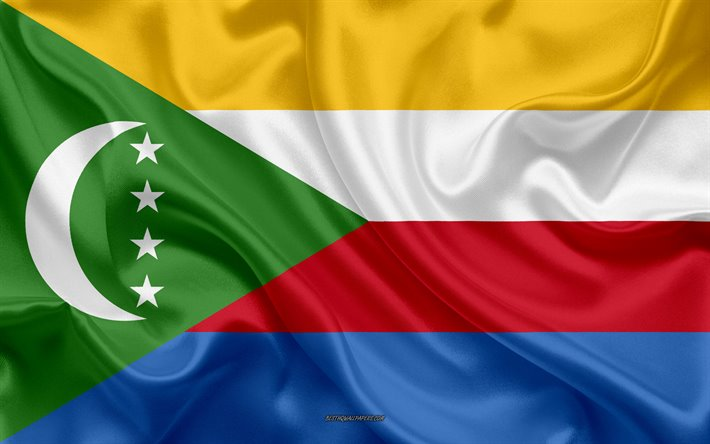

LES VILLES et les regions
Moroni(capitale de l'ile)
Bambao :
Mkazi, Mvouni,Mavingouni,vouvouni, M’Dé, Selea, Niomadzaha, Moidzaza Djoumbé,Mboudadjou,Daoeni,
Dzahani,Boueni,
Iconi,Mbachilé,MoindzazaMboini, Ndrouani, Séréhini
Hambou :
Mitsoudjé, Troumbéni, Chouani, Djoumoichonguo,Banguoi, Nkomioni, Salimani,Singani, Mdjoiezi, Hetsa, Bambani, Dzahadjou
Badjini :
Dembeni, Mdjakagnoi, Mboudé ya Mboini, Mlimani, Panda, Mindradou, Mandzissani ,Tsin imoichonguo, Kandzilé, Makorani, Itsoundzou,Ouzioini, Ifoundihé Chadjou, Ifoundihé Chamboini, Dima, Nkourani ya sima, Domoni, Dzoidjou, Famaré,Foumbouni, Koimbani, Malé, Midjendjeni, Ourovéni, Ndzouani, Chindini, Smamboini, Dzahadjou, Mohoro, Nyoumadzaha-Mvoumbari,Bandamadji, Bandandaoueni, Tsinimoipangga, Oungoni, Pidjani ,Simboussa,Inane, Ngambeni, Bandamadji-Lakouboini, Dar-salama, Mlali, Ngnoum Milima, Nkourani Mkanga, Didjoni, Kové
Oichili:
Koimbani, Irohé, Boeni, Dzahadjou, Sada, Sadani, Choumoni, Samba Madi, Camro, Sima, Itsinkoudi, Dzahani, Kouhani, Mtsamdou, Hambou, Hassendjé
Dimani:
Mtsangadjou, Foumboudzivouni, Mboudé, Midjinzé, Madjoma, Idjoindradja, Idjikoundzi, Maoueni, Mirereni, Ntsorale, Sidjou, Rehemani,
hamahmet:
Mbéni, Séléani, Salimani, Sada Shihouwe, Sada Mhuwamboi, Bouni, Heroubili, Batou, Nkourani, Ifoudihé, Mnoungou Dimadjou, Nyadombwéni, Mdjhari, Moidja, Banbadjani, Ngolé, Itandzéni, Ouellah, Hadjambou, Mbatsé
Mboinkou :
Madjeoueni, Sadani, Trélézini, Chezani, Ndroudé, Nyumamilima, Hantsindzi, Badamadji
mitsamihouli:
Bangoi Kouni, Batsa, Ouzio, Ivoini,Bangoi Kouni, Batsa, Ouzio, Ivoini,Ouemani, Koua, Ouellah Mémboimboini, Hadawa, Fassi, Mitsamihouli, Nkourani, Ndzaouzé Toiyifa, Ntsadjéni, Founga, Ouhozi Bangoi Mafsakowa :Mémboidjou, Pdjani, Songomani, Toiyifa, Ntsadjéni, Founga
Mboude
Djomani, Chamlé, Vouvouni, Mandza, Mdjoizi, Helendjé, Douniani, Koua Ntsaoueni, Ivmbeni, Djongoé, Maoueni, Simboussa, Ntsorale, Domoidjou, Domoimboini, Moi
Hamanvou :
Hahaya, Bouenindi, Mbambani, Mbaleni, Oussivo, Mbangani, Diboini, Bibavou, Milevani
itsadraya:
Batsa, Vanamboini, Vanadjou, Mhandani, Dzahadjou, Vounambadani, Itsanra Mdjini, Salimani, SambaMbodoni, Dzahani la Tsidjé, Maoueni, Mirontsi, Bandamadji, Dimadjou ,Dzahani II Bahani, Sima, Ouellah, Samba Nkouni,Ntsoudjini, Hantsambou, Milembeni, Zivandani
NGAZIDJA
Grande Comore (ou Ngazidja en shikomor) est un État fédéré de l'Union des Comores. C'est la plus peuplée et la plus grande des îles de l'archipel des Comores. Elle a pour capitale Moroni, qui est également la capitale fédérale de l'Union des Comores.
La population de Grande Comore est d'environ 410 736 habitants en 2016 . Les banques se concentrent sur l'ile de ngazidja sur le plan economique ils devancent les 2 autres en outre anjouan quand elle a un secteur secondaire et tertiaire plus ou moins similaitres a l'ile de ngazidja tand dis que mohheli peine a ameliore son secteur secondaire l'ile de ngazidja abrite aussi le palee presidentiel. les comores surtout Ngazidja ont beaucoup de traditions parmis le plus populaires c'est le anda.
L'île qui mesure 77 km de long pour 27 km de large, possède de nombreuses plages de sable blanc mais souffre du pillage. Toutefois, depuis les années 1990, un plan de sensibilisation a été mis en place pour préserver l'écosystème. Un éventuel essor du tourisme pourrait inciter les habitants à réfléchir sur les conséquences de ce pillage.
En effet, ce sable pourtant de très mauvaise qualité, car salé, était utilisé frauduleusement dans la construction.
La Grande Comore dispose également d'un plateau étendu qui souffre de manque d'eau, ce qui nuit à l'expansion de l'agriculture.
A visité
CAPITALE,MORONI
Moroni (en arabe : موروني) est la capitale de l'Union des Comores et chef-lieu de la préfecture de Moroni-Bambao, sur l'île de Grande Comore,
elle a une population d'environ 111 329 habitants en 2016.
Moroni viendrait du mot mroni qui signifie « à la rivière ».
Ses deux quartiers historiques sont Badjanani (le nom viendrait des mots arabes Bab- pour « Porte » et Djannat pour « Paradis »),
Badjanani serait la « porte du paradis ») et Mtsangani (Mtsanga pour « sable » et ni pour « lieu »), quartier par sa proximité avec la plage
et l'ancien port de Moroni.
Ces deux quartiers forme la Médina, le cœur de la ville.
La ville possède un port qui permet de rejoindre les autres îles de l'archipel comorien, ainsi que Madagascar ou le continent.
KARTHALA
Le Karthala, Karatala, Kartala ou encore Kartola1, en arabe القرطالة, Al Qirtālah, est un volcan des Comores situé dans
l'archipel du même nom, sur l'île de Grande Comore2. Relativement actif avec vingt éruptions au cours des xixe et xxe siècles,
ces dernières se traduisent généralement par la formation de coulées de lave qui atteignent dans certains cas la mer et parfois
l'apparition d'un lac de lave dans
un des cratères de la caldeira sommitale de ce volcan bouclier de 2 361 mètres d'altitude.
Le Karthala est situé dans
l'île de Grande Comore, une île de l'Union des Comores, dans l'archipel des Comores baignée par le canal du Mozambique, dans
l'océan Indien2. Occupant le sud de l'île de Grande Comore, il est entouré au nord par La Grille, un autre volcan qui a formé
le nord de l'île de Grande Comore
Grande Comore
|
|
|---|---|
 Carte ngazidja |
|
| Pays | comores |
| Archipel | comore |
| Localisation | Canal du Mozambique (océan Indien) |
| coordonées | 11° 40′ 01″ S, 43° 20′ 48″ E |
| Superficie | 1 148 km2 |
| point culminant | Karthala (2 361 m) |
| geographie | ile volcanique |
| Population | 410 736 hab. (2016) |
| Densité | 357,78 hab./km2 |
| Gentilé | Grand comorien, Grand comorienne |
| Plus grande ville | Moroni |
| Autres informations | |
| Découverte | Préhistoire |
| Fuseau horaire | UTC+3 |
MUSEE NATIONAL DES COMORES(CNDRS)
Le Musée National des Comores a ouvert ses portes en 1988 par l’installation de quatre salles d’exposition permanente, de plus de 300 m2.
Situé au sein du CNDRS (Centre National de Documentation et de Recherche Scientifique) à Moroni,
le Musée National des Comores comprend 4 salles ouvertes au public :
Salle d’Histoire, d’Archéologie, d’Art et de Religion, où l’on trouve exposée à travers des photos,
des tessons et des manuscrits, l’histoire millénaire des Comores, du IXème siècle à nos jours.
Des gravures sur les sultans, leurs demeures, les villes et paysages, sont présentées et permettent
de remonter visuellement la période des sultanats.
Lac Niamawi
Le lac Niamawi est un lac présent sur l'île principale des Comores. Il est situé au Nord de la Grande Comore dans un ancien cratère volcanique.
Ce lac a la particularité d'être salé.
La légende dit qu'un village était auparavant situé
à la place de ce lac. Un jour une vieille femme est venue demander un verre d'eau aux villageois qui refusèrent de lui donner,
sauf une famille. La vieille dame dit alors à la mère de famille de quitter le village avant la nuit avec sa famille sans aucune raison
particulière. La famille quitta donc le village. Le lendemain matin lorsque la famille revint au village,
il avait été inondé. La vieille femme était en fait une sorcière.

GRAND MARIAGE
Les Grands mariés (Shingazidja : Wandru Wadzima, les hommes accomplis) qui sont les grands notables, les hommes qui pèsent sur la vie sociale et politique par le prestige lié au mariage. Ils sont autorisés à porter des vêtements spécifiques. Le poids des notables est extrêmement important, rien ne peut se faire sans leur assentiment. Dans les années 1970, le révolutionnaire Ali Soilih mit en place un régime qui lutta contre ce pouvoir jugé immobilisateur et un frein au développement. En Grande Comore, devenir Grand marié est le but de tout homme, et un devoir pour les fils aînés. Dans les autres îles, la situation est moins hiérarchisée, donc plus souple. Aux Comores, on travaille pour subvenir d’abord aux besoins de sa famille.